Portfolio 03 · Apparel projects
Apparel
Ensembles built from the handwoven textiles of Northeast India (Khasi, Jaintia, Rabha, Hajong and Assamese taant), alongside surface development and export-house sampling.
Saadgi
An ensemble combining traditional Khasi and Jaintia tribal fabrics.

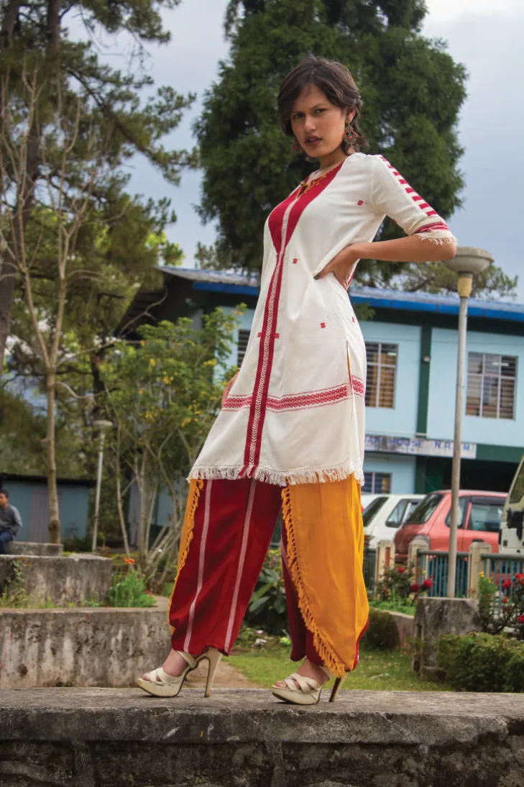

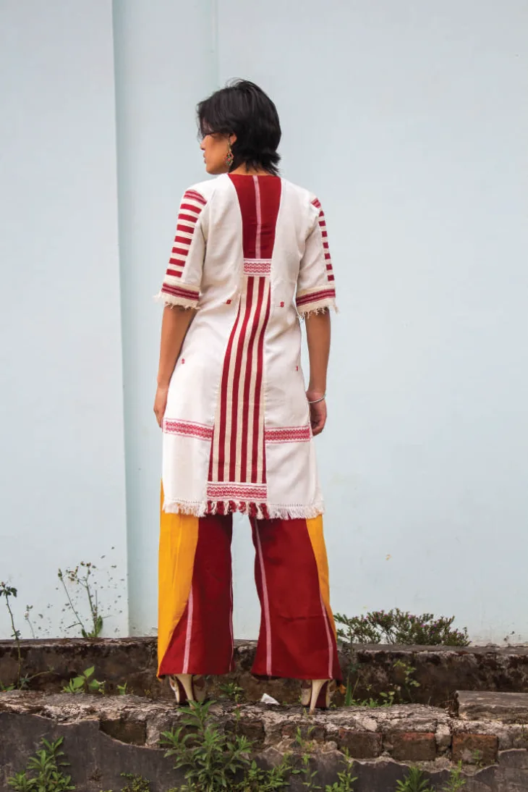
Export House Internship
Samples developed during an export-house internship: work on knits, floral machine embroidery and lace fabrics.


Indian Wear Project
Inspired by the Taj Mahal’s reflection in the Yamuna: the whites sit beneath a blue sheer lace.


Surface Development
Tie-dye, hand embroidery and embellishments: a deconstructed-denim bralette with denim capris, and a jacket worked with surface design details.

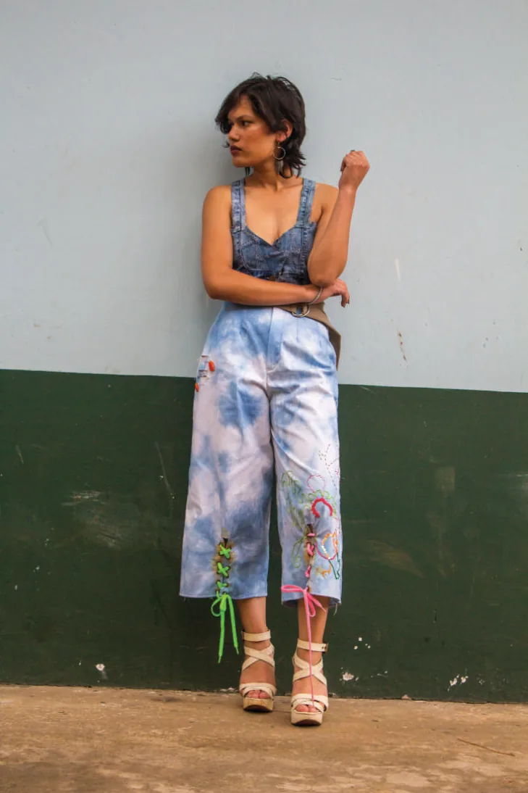

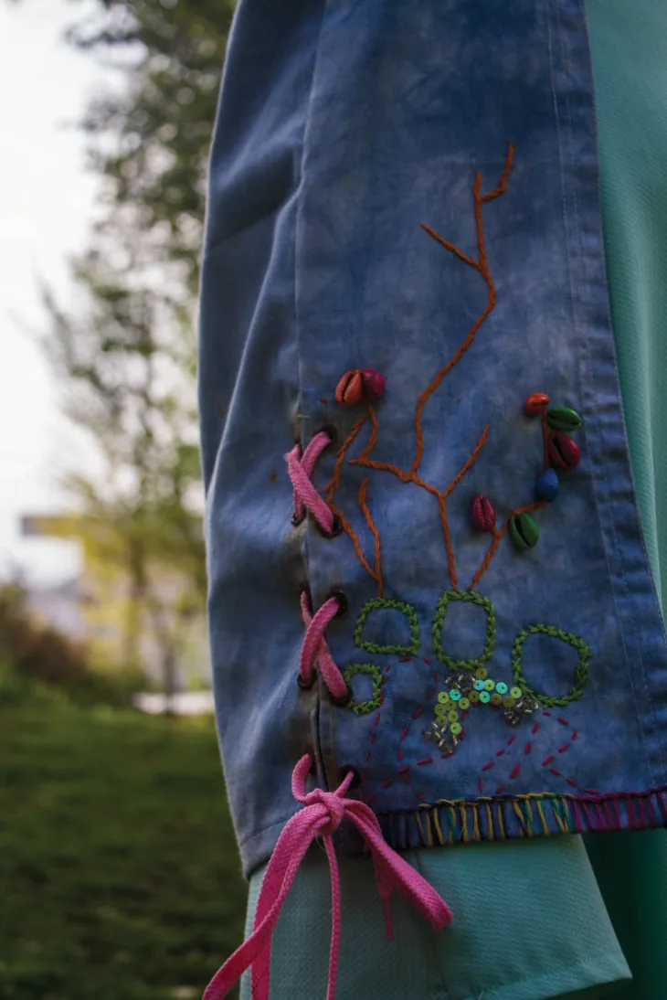

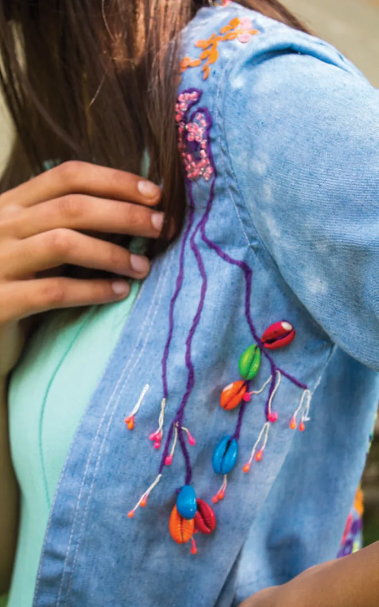

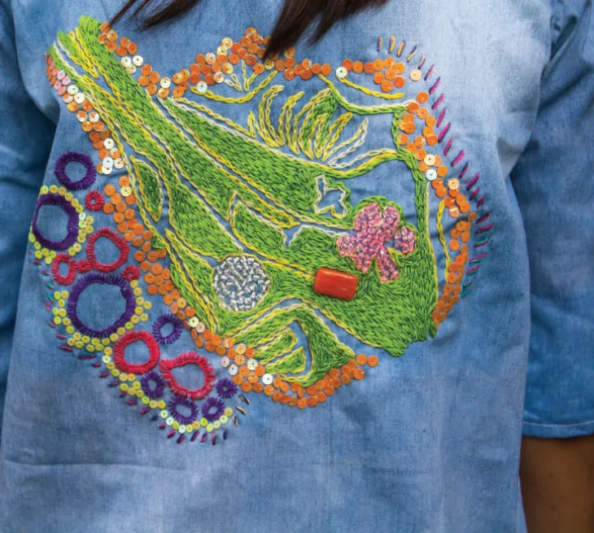
Personal Project
An ensemble combining taant and tribal Assamese fabrics.


Surface Design Project
Crochet, mirrorwork, cross stitches and double running stitches.

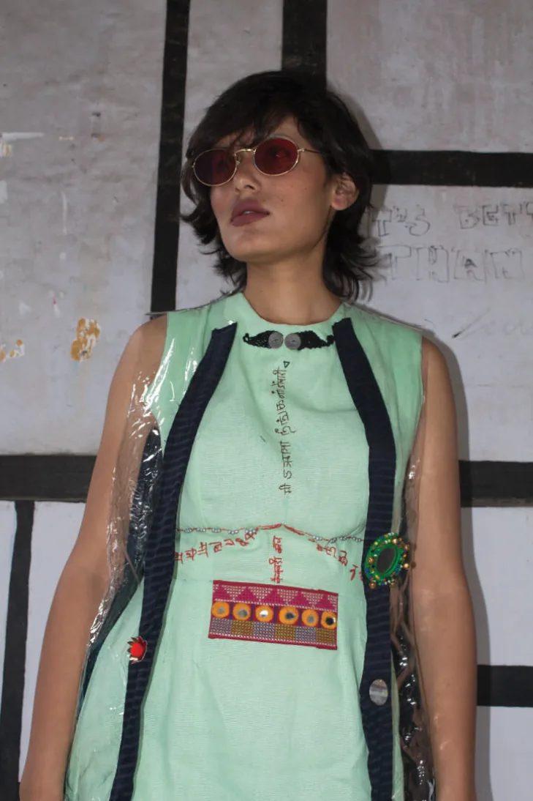

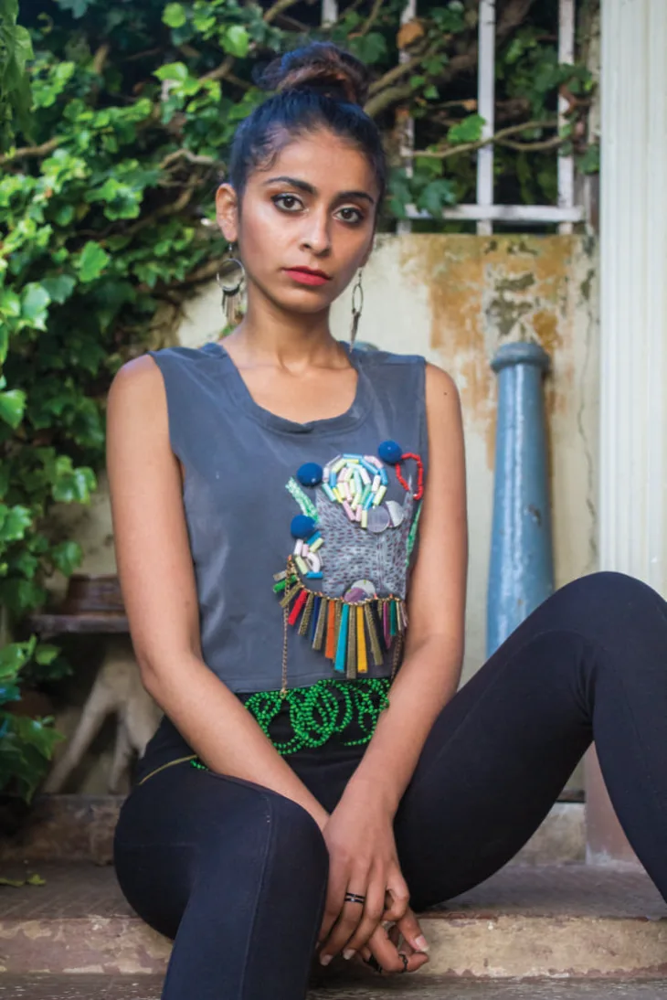
The Orient
An ensemble combining Rabha and Hajong tribal textiles: the finished piece from the textile collection of the same name.
See the textile development →

Kaftaan Project
Surface explorations with the human brain as a theme.

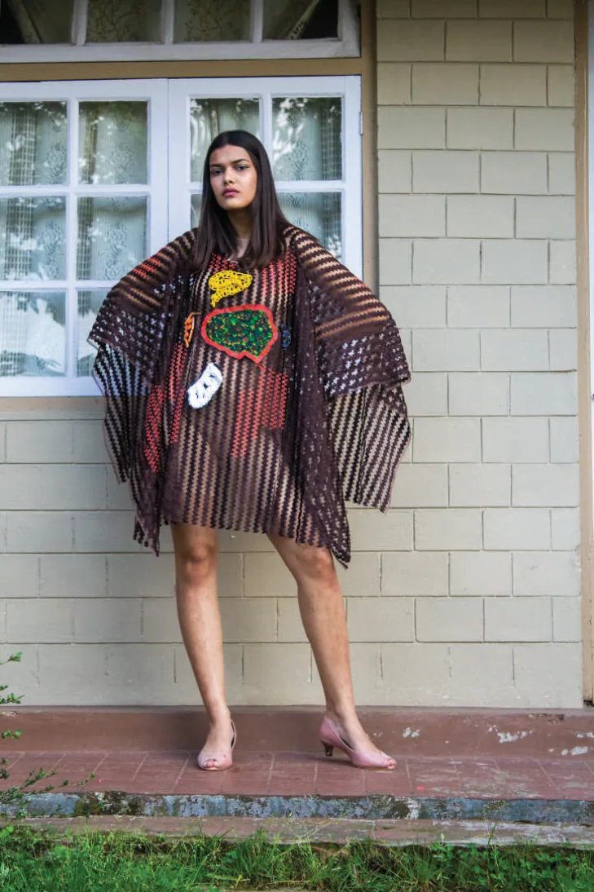

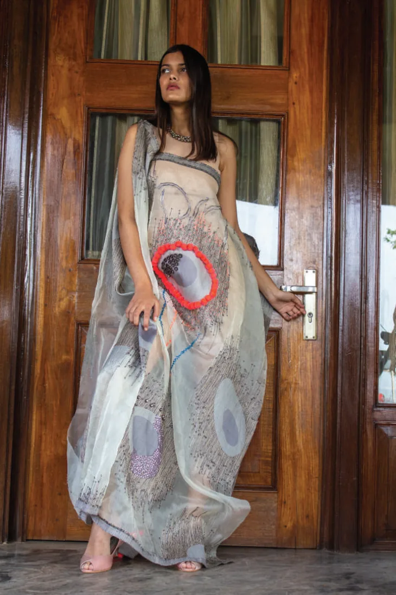
Other Projects
A small tote built from two traditional bamboo kulas, and an exercise in creative pattern making.

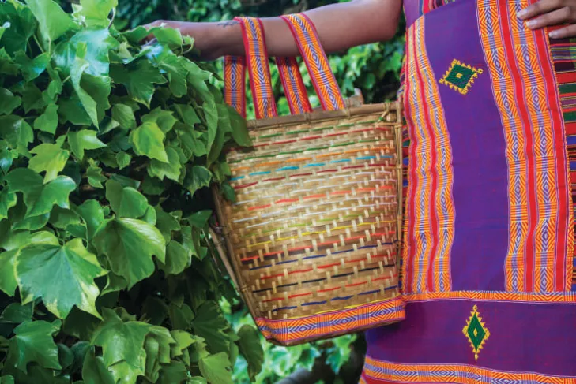

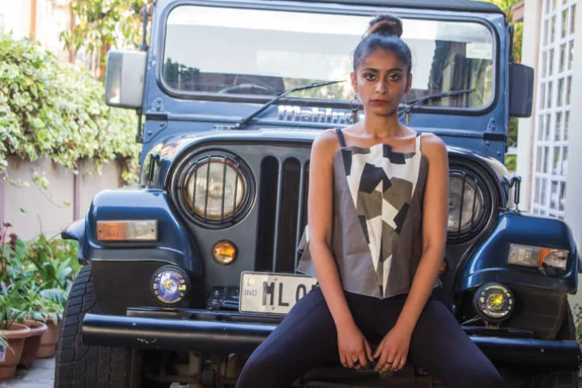